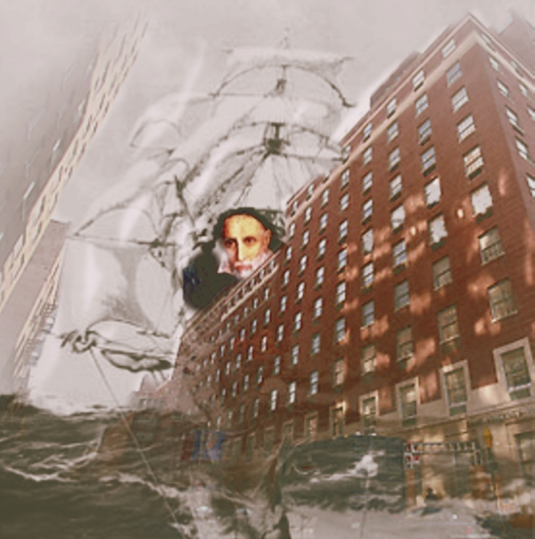

St. Vincent 
R. Nemo Hill
St Vincent’s Hospital (which saved my life) because of Bankruptcy has been closed down.
The Main Building on 12th street is post-operative pale.
Only days ago there was so much energy, façade flushed rouge.
Now, without guards on duty, I stalk into the interior—empty of furniture.
Will I clog the toilets which are arteries? Will I kick walls so blood will be drawn?
On the third floor is a door of tattered mahogany. Here the smell of dust and thorns.
This is one of the hospital’s theatrical lavatories. I force the door.
When I open a window I hear a trickle of asphyxiation, a spit of gore.
Behind me on the throne of the privy is St. Vincent, who gave his name to the hospital,
who founded the ‘Sisters of Charity’ to serve the sick poor. Except for a ‘cornette’
(Sally Field’s headdress) he’s bollock naked, proud to be ancient, confused / alone.
Since the seventeenth century St Vincent’s been working here daily—so takes me on a tour.
In what was urology he shouts, “Watch me thread this needle up my very large penis.”
In gynecology, “Appraise my mound of Venus.”
In podiatry, “Smile as you clean between my toes.”
These activities, he explains, are typical of healers—preening his healer’s body consisting of sores.
St Vincent then screams, “What is being done to me?”
I ask, “Do you have all your faculties?”
“That’s a trick question. I need to adjust my colostomy bag.”
I can’t stay talking. I have an appointment with my HIV doctor.
The HIV clinic is housed in a building across 7th Avenue, the only clinic to remain.
Exam tables, scales, IV stands, walkers, crutches, water fountains—strewn on the sidewalk,
enjoy a mingled communion lacking when, inside the hospital,
they were separated by people, separated by disease.
The HIV clinic is tucked away in a ground floor corner of a large eight story structure,
preparing to sail to the river.
Constructed as the headquarters of the maritime guild, it’s a ship disguised.
A main corridor leads to a deck where sits another St. Vincent—
there are billions, one per building, this one similar to the one previously spied.
“What is being done to me?” squeals St Vincent as the ship starts to quiver.
The Captain comes over. “You’ve been experimenting sexually, century after century. Your penance is the wrench of the tempest’s roar.”
|